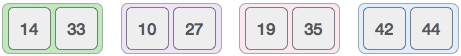

Merge sort is a sorting technique based on divide and conquer technique. With worst-case time complexity being Ο(n log n), it is one of the most respected algorithms.
Merge sort first divides the array into equal halves and then combines them in a sorted manner.
To understand merge sort, we take an unsorted array as depicted below −

We know that merge sort first divides the whole array iteratively into equal halves unless the atomic values are achieved. We see here that an array of 8 items is divided into two arrays of size 4.

This does not change the sequence of appearance of items in the original. Now we divide these two arrays into halves.

We further divide these arrays and we achieve atomic value which can no more be divided.

Now, we combine them in exactly same manner they were broken down. Please note the color codes given to these lists.
We first compare the element for each list and then combine them into another list in sorted manner. We see that 14 and 33 are in sorted positions. We compare 27 and 10 and in the target list of 2 values we put 10 first, followed by 27. We change the order 19 and 35. 42 and 44 are placed sequentially.
In next iteration of combining phase, we compare lists of two data values, and merge them into a list of foud data values placing all in sorted order.
After final merging, the list should look like this −

Now we should learn some programming aspects of merge sorting.
Merge sort keeps on dividing the list into equal halves until it can no more be divided. By definition, if it is only one element in the list, it is sorted. Then merge sort combines smaller sorted lists keeping the new list sorted too.
Step 1 − if it is only one element in the list it is already sorted, return. Step 2 − divide the list recursively into two halves until it can no more be divided. Step 3 − merge the smaller lists into new list in sorted order.
We shall now see the pseudocodes for merge-sort functions. As our algorithms points out two main functions − divide & merge.
Merge sort works with recursion and we shall see our implementation in the same way
procedure mergesort( var a as array )
if ( n == 1 ) return a
var l1 as array = a[0] ... a[n/2]
var l2 as array = a[n/2+1] ... a[n]
l1 = mergesort( l1 )
l2 = mergesort( l2 )
return merge( l1, l2 )
end procedure
procedure merge( var a as array, var b as array )
var c as array
while ( a and b have elements )
if ( a[0] > b[0] )
add b[0] to the end of c
remove b[0] from b
else
add a[0] to the end of c
remove a[0] from a
end if
end while
while ( a has elements )
add a[0] to the end of c
remove a[0] from a
end while
while ( b has elements )
add b[0] to the end of c
remove b[0] from b
end while
return c
end procedure
To see merge sort implementation in C programming language, please click here.